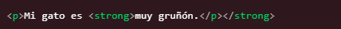
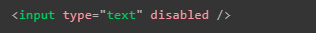
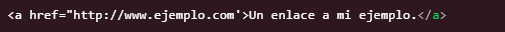
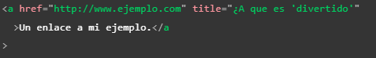
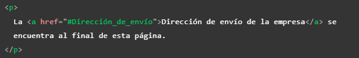
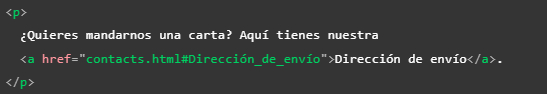

-
Lo ideal es confiar en HTML para el contenido tanto como sea posible
-
Una buena práctica es tomarse el tiempo de pensar y definir la estructura que tendrá la página, desde el cómo se estructurará, conectará por cuántas páginas estará compuesta, qué contenido albergará, y el cómo se quiere que se vea entre otros aspectos (siempre es bueno dibujar o plasmar las ideas en borradores o referencias visuales)
-
Lo mejor para una página es incluir contenido de terceros solo cuando es necesario, ya sea por temas de derechos de autor, licencias o vulnerabilidades aprovechables por terceros malintencionados
-
Si es posible utilizar un servicio HTTPS para nuestra página, tener presente la seguridad de esta siempre debe ser primordial
-
El anidamiento de las etiquetas debe de hacerse de forma correcta para evitar mal funcionamiento de los elementos, es decir el primer elemento en abrirse es el último en cerrarse, y viceversa, por lo tanto nunca hay que mezclar el inicio y final de las etiquetas como se ve en el ejemplo, las etiquetas deben estar claramente dentro o fuera una de otras

-
Si escribimos "lorem" en alguna etiqueta de texto emergerá una recomendación del editor de texto, seleccionarla se plasmará en la etiqueta un texto en latín, su única función es actuar como un texto de relleno para que podamos emular el contenido de la página mientras esta es desarrollada
-
Es posible aplicar más de una clase a los elementos HTML utilizando el atributo "class", para hacerlo únicamente basta con dejar un espacio entre los nombres de las clases.
-
Como pequeño recordatorio si se hunde "alt+z" el código extenso mostrado en el editor de texto en vez de extenderse hacia la derecha de forma indefinida, se replegará y se alineará dentro de la pantalla
-
Los atributos booleanos son aquellos que únicamente tienen un valor, generalmente es el mismo que el nombre del atributo por lo que estos atributos se implementan sin valor alguno

-
Se puede usar libremente ya sea comillas dobles o simples ya que estas son equivalentes, lo que nunca debe pasar es que se mezclen en un mismo elemento

También se puede usar un tipo de comillas para los valores de los atributos y otro en el contenido.

Si se necesita incluir el mismo tipo de comillas en el contenido es necesario utilizar entidades HTML para estas.

-
Dentro del elemento "head" no solo se definen los metadatos también se puede encontrar la descripción de la página para los motores de búsqueda
-
Los comentarios dentro de HTML se aperturan con "<!--" y se culminan con "-->"
-
El elemento "nav" de la barra de navegación se puede incluir como parte del encabezado o se puede manejar como un elemento independiente
-
El elemento "main" solo debería ser usado una vez por página ya que representa el contenido exclusivo de esta, tampoco debería estar anidado dentro de otros elementos
-
No utilizar demasiados contenedores "div" ya que al no poseer un significado semántico pueden ocasionar un código difícil de actualizar y mantener, lo recomendable es que solo se use si no existe una mejor opción para ese caso de uso
-
Solo aplicar un único "h1" por página
-
No usar más de tres niveles de títulos en un documento, si son necesarios usar más lo recomendable es separar el contenido en diferentes páginas
-
Actualmente no es muy recomendable usar los elementos "b", "i" y "u" ya que no aportan semántica, a menos que se dé el caso de que se necesite transmitir el significado tradicional de las negritas, en este caso si no hay otro elemento mejor para hacer esto sería correcto su uso
Recordemos sus usos tradicionales:
<i> se usa para transmitir el significado que tradicionalmente transmite la itálica: extranjerismos, clasificaciones taxonómicas, conceptos técnicos, un pensamiento...
<b> se usa para transmitir el significado que tradicionalmente transmite la negrita: palabras clave, nombres de productos, frases principales...
<u> se usa para transmitir el significado que tradicionalmente conlleva el subrayado: nombres propios, errores ortográficos...
Nota: normalmente el subrayado se asocia con los hipervínculos por lo que se recomienda puntualizar su uso o cambiar los estilos con CSS.
-
Incluso los nombres de las imágenes son tomados en cuenta para el SEO (posicionamiento en los buscadores) de la página, por eso lo mejor es aplicar nombres descriptivos en estas
-
Se puede incluir una imagen usando la URL absoluta o la URL relativa, sin embargo aplicar la URL absoluta es desperdiciar tiempo y recursos ya que el navegador tiene que recorrer un camino más largo para encontrar la imagen, por lo tanto la solución más eficiente es usar la ruta relativa
-
Si se adjunta una imagen de la que no se sea el propietario siempre tener presente:
-
Recordar el uso del atributo "alt" (texto alternativo) en los elementos "img" ya que esto se mostrará en los casos en que la imagen no pueda ser mostrada al usuario o se use un lector de pantalla
-
No solo es posible utilizar los enlaces para apuntar a un documento o archivo, también podemos dirigirlos a alguna sección o elemento en específico de la página, para esto únicamente se necesita hacer referencia al atributo "id" del elemento en cuestión, como se puede ver en el ejemplo

También podemos hacer esto desde otra página, incluyendo el "id" al final de la ruta a la página:

-
En caso de que se asigne una URL en la que se defina en qué carpeta ingresar pero no a qué archivo acceder la mayoría de los servidores buscan por defecto los archivos index cuando no se especifica uno
-
Los motores de búsqueda también se fijan en el texto de los enlaces por lo tanto es bueno utilizar palabras claves para describirlos, esto también ayuda a los usuarios que ingresen en la página
-
No escribir "enlace a" o "link" porque los lectores de pantalla ya anuncian los enlaces, y los usuarios comunes pueden distinguirlos por sus estilos, por lo tanto es redundante
Incluir el contenido de reserva en los elementos de vídeo
También es recomendable incluir más de un formato de vídeo para asegurar la compatibilidad con diversos navegadores
-
Al usar un elemento "iframe" es recomendable establecer el atributo "src" con JavaScript, para que primero se cargue nuestra página y luego el contenido incrustado, mejorando los tiempos de carga y la usabilidad
-
Siempre que se embebe contenido en un iframe hacerlo desde un protocolo HTTPS ya que este elemento puede ser un punto de ataque malintencionado
-
También es esencial siempre usar el atributo "sandbox" en el caso de usar un iframe ya que de ese modo se limitan las opciones que pudiese tener un ataque malicioso, del mismo modo una nota importante es que nunca debe agregar tanto "allow-scripts" como "allow-same-origin" a su atributo "sandbox"; en ese caso, el contenido incrustado podría pasar por alto la misma política de seguridad de origen que impide que los sitios ejecuten scripts y usar JavaScript para desactivar sandboxing por completo
-
Recordar que un atributo indispensable para enviar los datos de un formulario es el atributo "name" ya que los datos son enviados en cadenas "clave/valor"
-
No es recomendable anidar un formulario dentro de otro ya que esto puede ocasionar comportamientos impredecibles, lo que sí se puede es usar elementos de formularios que se encuentren fuera de este, todo esto a través del uso del atributo "form"
- Es una práctica común usar listas o "div" para delimitar los elementos de los formularios y aplicar estilos CSS más fácilmente, también en casos más complejos se usan elementos "section" y "fieldset" para agrupar en base a la funcionalidad de los elementos